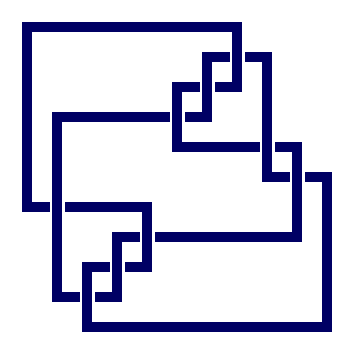
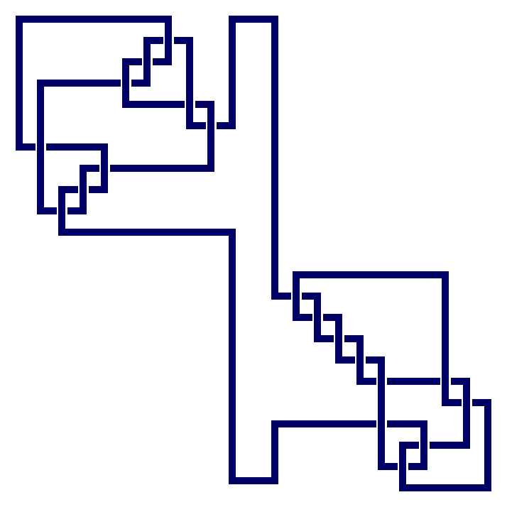
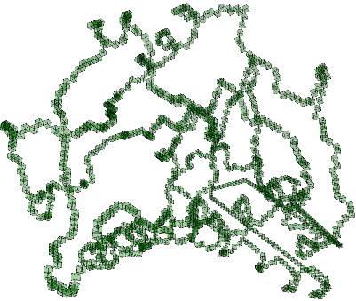
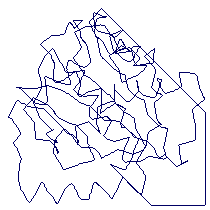
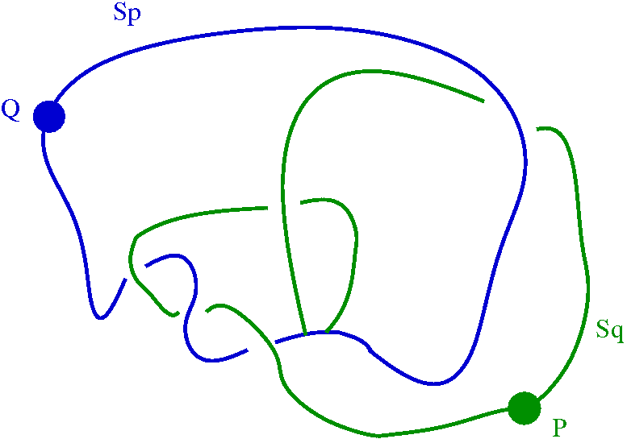
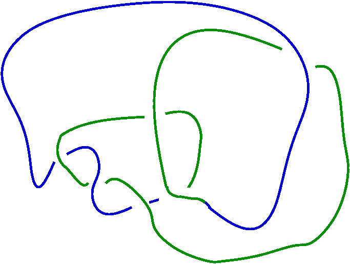

|
|||
|---|---|---|---|
| Knots
and
links
can
be
realized
as
3-dimensional
pure
cubical
complexes.
For
instance,
the
following
commands
construct
the
10th
prime
knot
on
9
crossings
and
then
display
the
knot.
(Data
on prime knots with low
crossing number has been taken from the Knot
Atlas.) |
|||
| gap>
K:=PureCubicalKnot(9,10); prime knot 10 with 9 crossings gap> ViewPureCubicalKnot(K); 
|
|||
| The
following commands display the sum of the 10th and 11th prime knots on
9 crossings. |
|||
| gap>
K:=PureCubicalKnot(9,10);; gap> L:=PureCubicalKnot(9,11);; gap> M:=KnotSum(K,L); prime knot 10 with 9 crossings + prime knot 11 with 9 crossings gap> ViewPureCubicalKnot(M); 
|
|||
| The
following commands compute the Alexander polynomial of the sum of the
10th and 11th knots on 9 crossings. Alexander polynomials are returned
with degree
0 coefficient equal to 1. |
|||
| gap>
AlexanderPolynomial(M); x_1^10-7*x_1^9+77/4*x_1^8-137/4*x_1^7+191/4*x_1^6-215/4*x_1^5+191/4*x_1^4-137/4*x_1^3+77/4*x_1^2-7*x_1+1 |
|||
| Modulo
ambient
isotopy
and
mirror
image
there
are
84
prime
knots
with
9
or
fewer
crossings.
These
84
knots
yield
74
distinct
Alexander
polynomials. The following commands compute the abelian invariants of the low index subgroups of the knot group G (=fundamental group of knot complement) of the sum of the 10th and 11th knots on 9 crossings. The subgroups H<G of index at most 5 are computed. The abelian invariants are sorted so as to yield an isomorphism invariant of G. We remark that the abelian invariants of subgroups of index at most 5 in the knot group are sufficient to distinguish between all prime knots on 9 or fewer crossings (up to ambient isotopy and mirror image). |
|||
| gap>
G:=KnotGroup(M);; gap> Invariants:=List(LowIndexSubgroupsFpGroup(G,5),AbelianInvariants);; gap> Invariants:=SortedList(Invariants); [ [ 0 ], [ 0, 0, 0 ], [ 0, 0, 0 ], [ 0, 0, 0 ], [ 0, 0, 0 ], [ 0, 0, 0, 3, 3, 11, 11 ], [ 0, 0, 2, 3, 5, 7, 7 ], [ 0, 0, 2, 3, 5, 7, 7 ], [ 0, 0, 2, 3, 5, 7, 7 ], [ 0, 0, 2, 3, 5, 7, 7 ], [ 0, 0, 3, 3, 3, 7, 7, 11 ], [ 0, 0, 3, 11 ], [ 0, 0, 3, 11 ], [ 0, 0, 3, 11, 11, 13, 13 ], [ 0, 2, 3, 3, 3, 3, 7, 7, 11 ], [ 0, 2, 3, 3, 5, 7, 7, 8 ], [ 0, 2, 3, 3, 5, 7, 7, 8 ], [ 0, 2, 3, 3, 5, 7, 7, 8 ], [ 0, 2, 3, 3, 5, 7, 7, 8 ], [ 0, 2, 3, 3, 5, 11 ], [ 0, 3, 3, 3, 3, 11, 11 ], [ 0, 3, 3, 11, 11 ], [ 0, 7, 7, 13, 13 ], [ 0, 59, 59, 79, 79 ] ] |
|||
| The
functions KnotGroup() and PureCubicalKnot() can
be applied to links. For instance, the notation [[5, 9],[1, 8],[9,
3],[7, 2],[8, 6],[4, 7],[3, 5],[2, 4],[6, 1]] represents a cubical link
with all vertical lines at the front and all horizontal lines at the
back. The bottom horizontal line extends from the 5th column to the 9th
column. The second to bottom horizontal line extends from the 1st
column to the 8th column. And so on until we see that the top
horizontal line extends from the 1st column to the 6th column. |
|||
| gap>
C:=[[5,
9],[1,
8],[9,
3],[7,
2],[8,
6],[4,
7],[3,
5],[2,
4],[6,
1]];;
gap> N:=PureCubicalKnot(C); Pure cubical link. gap> ViewPureCubicalKnot(N); gap> G:=KnotGroup(N);
<fp group of size infinity on the generators [ f1, f2, f3 ]> gap> RelatorsOfFpGroup(G); [ f1*f2*f1^-1*f3*f2^-1*f3^-1, f2*f3^-1*f1^-1*f2*f3*f2^-1*f1^2*f2^-1*f1^-1 ] |
|||
| The Protein
Data
Base
contains a wealth of data which can be investigated with respect to
knottedness. Information on a particular protein can be downloaded as a
pdb file. Each protein consists of one or more chains of amino acids
and the file gives Euclidean coordinates of the atoms in amino acids.
Each amino acid has a unique "alpha carbon" atom (labelled as "CA" in
the pdb file). A simple path can be constructed through the sequence of
alpha carbon atoms. By joining the ends of this path one obtains a
simple closed
curve in Euclidean 3-space. For instance, the pdb
file of the T.thermophilus 1V2X protein, which consists of a single
chain of amino
acids, can be read as a 3-dimensional pure
cubical complex (of the homotopy type of a circle) using the following
commands. |
|||
| gap>
Kprotein:=ReadPDBfileAsPureCubicalComplex("1V2X.pdb"); Read chain of 190 amino acids containing 1530 atoms. Pure cubical complex of dimension 3. |
|||
| This
pure
cubical
complex can be viewed using the
following
commands. |
|||
| gap>
ViewPureCubicalComplex(ContractedComplex(Kprotein)); 
|
|||
| The
fundamental group of the complement of this protein (whose ends have
been joined) can be obtained using the following commands. |
|||
| gap>
C:=ComplementOfPureCubicalComplex(Kprotein);; gap> C:=ZigZagContractedPureCubicalComplex(C);; gap> G:=FundamentalGroup(C); <fp group of size infinity on the generators [ f1, f2 ]> gap> RelatorsOfFpGroup(G); [ f2*f1^-1*f2*f1*f2^-1*f1 ] |
|||
| The
following command shows that this fundamental group, and hence the
protein knot, is non-trivial since it has Alexander polynomial equal to
that of the trefoil group. |
|||
| gap>
AlexanderPolynomial(G); x_1^2-x_1+1 |
|||
| The
H.sapiens 1XD3 protein contains a more
complicated knot, as the following commands show. This pdb file needs
to be read at a "resolution" value of 5 or greater in order for the
successful representation of it as a pure cubical complex of the
homotopy type of a circle.. |
|||
| gap>
ViewPDBfile("1XD3.pdb");  gap> Kprotein2:=ReadPDBfileAsPureCubicalComplex("1XD3.pdb",5);; Reading chain containing 243 atoms. gap> C:=ComplementOfPureCubicalComplex(Kprotein2);; gap> C:=ZigZagContractedPureCubicalComplex(C);; gap> G:=FundamentaGroup(C);; #I there are 2 generators and 1 relator of total length 16 gap> AlexanderPolynomial(G); x_1^2-3/2*x_1+1 gap> AlexanderPolynomial(PureCubicalKnot(5,2)); x_1^2-3/2*x_1+1 gap> ViewPureCubicalKnot(PureCubicalKnot(5,2));; |
|||
| We
remark that this prime knot on five crossings has unknotting number
equal to 1. It is thus possible to convert the knot to the trivial knot
by changing one over crossing to an under crossing or vice-versa.
There may be slight errors in the coordinates of atoms in the pdb file for a protein. To test the robustness of the knottedness of a protein we can thicken the protein knot and see if its homotopy type changes. If the homotopy type does change then we can investigate whether the thickening has removed any knottedness. The following commands show that by thickening the Kprotein2 knot slightly we change its homotopy type to that of a wedge of two circles Sp v Sq, but that a further three thickenings contribute no further change of homotopy type. |
|||
| gap>
Kprotein2:=FramedPureCubicalComplex(Kprotein2);; gap> Kprotein2:=FramedPureCubicalComplex(Kprotein2);; gap> Kprotein2:=FramedPureCubicalComplex(Kprotein2);; #This creates some space to perform thickenings gap> T1:=ThickenedPureCubicalComplex(Kprotein2);; gap> L:=ContractedComplex(T1);; gap> Y:=CubicalComplexToRegularCWComplex(L);; gap> CriticalCellsOfRegularCWComplex(Y); [ [ 1, 571 ], [ 1, 601 ], [ 0, 6877 ] ] gap> T2:=ThickenedPureCubicalComplex(T1);; gap> T3:=ThickenedPureCubicalComplex(T2);; gap> T4:=ThickenedPureCubicalComplex(T3);; gap> L:=ContractedComplex(T4);; gap> Y:=CubicalComplexToRegularCWComplex(L);; gap> CriticalCellsOfRegularCWComplex(Y); [ [ 1, 380 ], [ 1, 468 ], [ 0, 9436 ] ] |
|||
| The
following
commands
show
that
the
complement of the thickened space
T3 has the homotopy type of a wedge of two circles and one 2-sphere. In
particular, this is quite different to the homotopy type of the
complement of the wedge of circles obtained from the unknot by
squeezing diagonally opposite points together. |
|||
| gap>
C:=ComplementOfPureCubicalComplex(T3);; gap> C:=ZigZagContractedPureCubicalComplex(C);; gap> Y:=CubicalComplexToRegularCWComplex(C);; gap> CriticalCellsOfRegularCWComplex(Y); [ [ 2, 68 ], [ 1, 88018 ], [ 1, 113335 ], [ 0, 49422 ] ] gap> G:=FundamentalGroup(Y); <fp group of size infinity on the generators [ f1, f2 ]> gap> RelatorsOfFpGroup(G); [ ] |
|||
| The
following commands show that the first circle Sp of the wedge T3
is unknotted. |
|||
| gap>
P:=RandomCubeOfPureCubicalComplex(T3);; gap> P:=ThickenedPureCubicalComplex(P);; gap> P:=ThickenedPureCubicalComplex(P);; gap> P:=ThickenedPureCubicalComplex(P);; gap> P:=ThickenedPureCubicalComplex(P);; gap> Sp:=PureCubicalComplexDifference(T3,P);; gap> ContractPureCubicalComplex(Sp);; gap> Sp:=ThickenedPureCubicalComplex(Sp);; #Makes Sp into a topology manifold again gap> Cp:=ComplementOfPureCubicalComplex(Sp);; gap> Cp:=ZigZagContractedPureCubicalComplex(Cp);; gap> Yp:=CubicalComplexToRegularCWComplex(Cp);; gap> CriticalCellsOfRegularCWComplex(Yp); [ [ 1, 14 ], [ 0, 28 ] ] |
|||
| The
following commands show that the second crice Sq of the wedge T3
is again unknotted. |
|||
| gap>
Q:=RandomCubeOfPureCubicalComplex(Sp);; gap> Q:=ThickenedPureCubicalComplex(Q);; gap> Q:=ThickenedPureCubicalComplex(Q);; gap> Q:=ThickenedPureCubicalComplex(Q);; gap> Q:=ThickenedPureCubicalComplex(Q);; gap> Sq:=PureCubicalComplexDifference(T3,Q);; gap> ContractPureCubicalComplex(Sq);; gap> Sq:=ThickenedPureCubicalComplex(Sq);; #Makes Sq into a topology manifold again gap> Cq:=ComplementOfPureCubicalComplex(Sq);; gap> Cq:=ZigZagContractedPureCubicalComplex(Cq);; gap> Yq:=CubicalComplexToRegularCWComplex(Cq);; gap> CriticalCellsOfRegularCWComplex(Yq); [ [ 1, 27 ], [ 0, 19 ] ] |
|||
| The
following commands determine the relative sizes of the two circles Sp
and Sq, showing that Sp is about four times longer than Sq. |
|||
| gap>
ContractPureCubicalComplex(Sp);; gap> Size(Sp); 2839 gap> ContractPureCubicalComplex(Sq);; gap> Size(Sq); 747 |
|||
| Thus
a
slight
thickening
of
the
protein
knot
of
1XD3
significantly
changes
its
homotopy
type
and
knottedness.
Further commands can be used establish that the
thickened protein knot and complement have the same homotopy types as a
space such as

and its complement.
However, a further three thickenings of the 1XD3 protein knot contribute no further changes to homotopy type. |
|||
| In
conclusion, the nature of the knot in the
protein 1XD3 is very
sensetive to the accuracy of the Euclidean coordinates of its alpha
carbon atoms given in the pdb file. A slight change in the coordinates
of certain atoms can change the ambient isotopy of the knot in the
protein to a knot such as the trefoil knot: 
but not to the trivial protein knot. |
|||
|